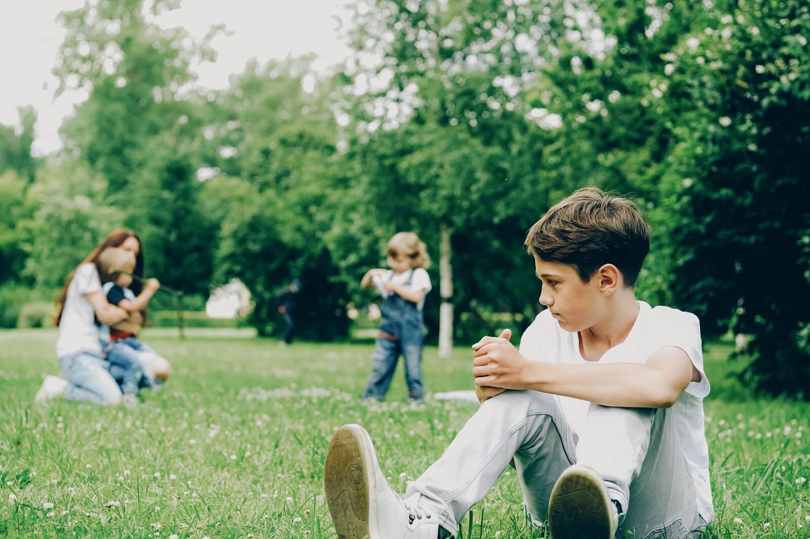
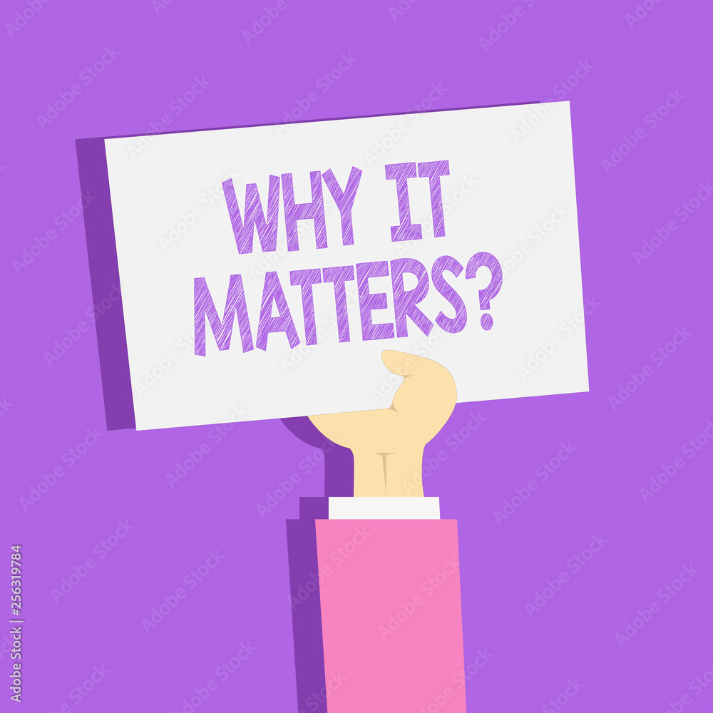
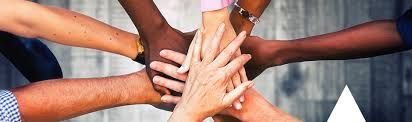

Helping Hand
Spotting the Signs of Child Sexual Assault and Providing Support
Our Mission
Our mission at Helping Hand is to provide comprehensive resources and support for recognizing and addressing the signs of sexual assault in children. We believe that early intervention and education can make a significant difference in the lives of young survivors.
We are committed to raising awareness about the subtle and overt signs of abuse, ensuring that caretakers, educators, and community members are equipped with the knowledge they need to identify and respond to these indicators effectively.
By fostering a community of informed and vigilant individuals, we aim to create a safer environment for all children, where they can grow and thrive without fear of exploitation or harm.

Recognizing the Signs
Recognizing the signs of sexual assault in children can be challenging, as these signs often manifest in subtle changes in behavior and emotional state. Common indicators include sudden withdrawal from social interactions, increased anxiety or depression, and unexplained outbursts of anger or sadness.
Other physical and behavioral signs may include changes in sleep patterns, nightmares, regression to earlier developmental stages (such as bedwetting), and avoidance of specific people or places. It's important to note that these signs can vary widely among children, and the presence of one or more does not necessarily confirm abuse.
Understanding these signs requires a careful and compassionate approach, where the child's well-being is prioritized above all. Engaging in open, non-judgmental conversations and providing a safe space for children to express their feelings can help in uncovering the root cause of their distress.
Why It Matters
The impact of sexual assault on children can be profound and long-lasting, affecting their mental, emotional, and physical health. Early intervention is crucial in mitigating these effects and aiding in the child's recovery and healing process.
Children who receive timely and appropriate support are more likely to overcome their trauma and lead healthy, fulfilling lives. By recognizing and addressing the signs of abuse early, we can prevent further harm and provide the necessary care and resources to help children rebuild their sense of safety and trust.
Moreover, addressing the issue of child sexual assault is not only a matter of individual concern but a societal responsibility. It is our duty to protect the most vulnerable members of our community and ensure that their rights and dignity are upheld.
Get Involved
There are numerous ways to get involved and support the mission of Helping Hand. Volunteering your time, donating to organizations that assist survivors, and spreading awareness about the signs of sexual assault are all impactful ways to contribute.
Additionally, educating yourself and others about the dynamics of child sexual assault and the importance of early intervention can create a ripple effect of awareness and prevention. Joining local advocacy groups, participating in training sessions, and supporting policy changes aimed at protecting children can also make a significant difference.
We invite you to visit our Helping page for more information on how you can contribute to this vital cause. Together, we can create a safer world for our children.
